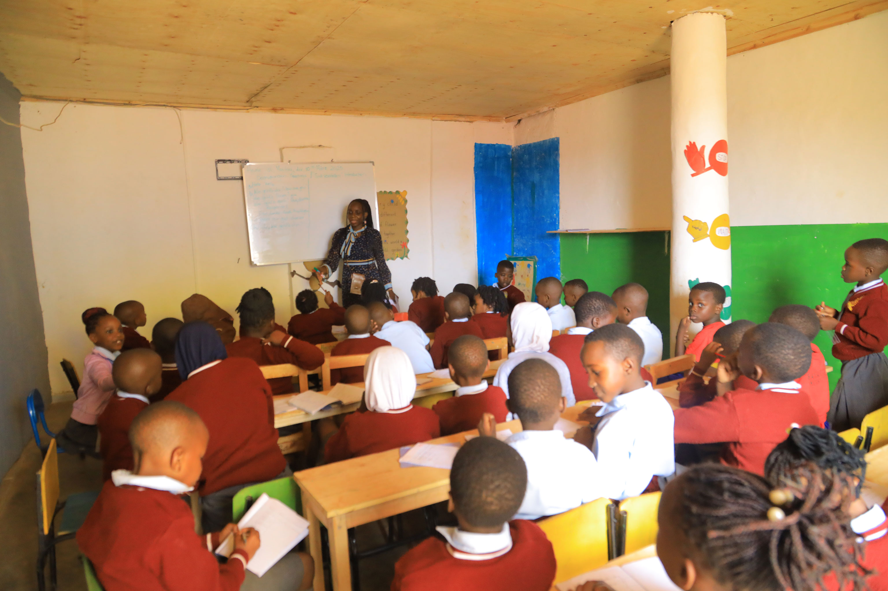
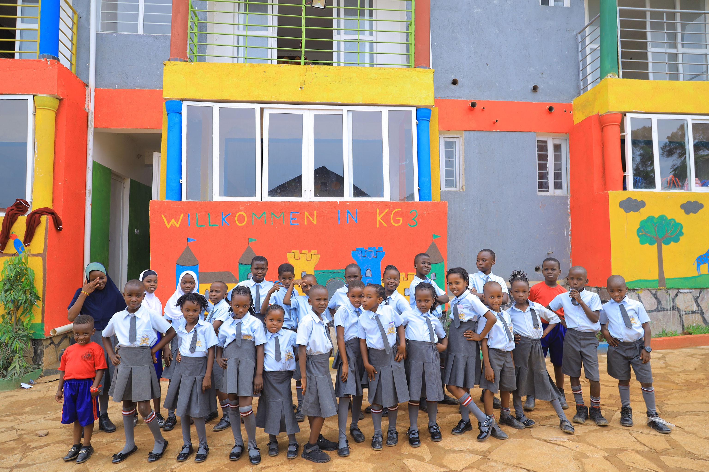

130 Schülerinnen und Schüler
Rund 130 Kinder besuchen derzeit die von uns unterstuetzte Schule.

Wir fördern den Zugang zu hochwertiger Bildung für benachteiligte Kinder in Uganda. Unsere Arbeit ist praxisorientiert, schrittweise aufgebaut und auf klare Prioritäten bei Schulteilnahme und Lernbedingungen ausgerichtet.
Rund 130 Kinder besuchen derzeit die von uns unterstuetzte Schule.
Ein Team aus 13 Lehrkräften begleitet den täglichen Unterricht.
Die Schule bietet Bildung vom Kindergarten bis zur Primarstufe P6.
16 Vollstipendien und 24 Teilstipendien unterstuetzen Kinder mit begrenzten Mitteln.
Die Bavaria Schools Uganda bieten ein wichtiges Lernumfeld für Kinder aus benachteiligten Familien. Die Schule leistet unter begrenzten Bedingungen verlässliche Bildungsarbeit.
Die Kapazität der Klassenräume ist derzeit begrenzt, mehrere Klassen sind überfüllt. Zusätzlicher Lernraum ist daher zentral für die Unterrichtsqualität.
Lehrkräfte und Kinder arbeiten täglich mit großem Einsatz. Damit dieser Einsatz langfristig wirkt, braucht es verlässlichen Lernraum.

Phase 1: Ausbau von Klassenräumen und Verbesserung der Lernflächen. Das ist unser vorrangiger Schwerpunkt zur Entlastung überfüllter Klassen und zur Stabilisierung des Unterrichts.
Sekundärer Bedarf: Möbel, Computer und Stipendien für Kinder, deren Familien die Schulkosten nicht tragen können.
Ausbau und Verbesserung von Klassenräumen als zentrale Priorität.
Bereitstellung von Möbeln und grundlegender Computertechnik für den Unterricht.
Gezielte Unterstützung für Schülerinnen und Schüler aus einkommensschwachen Haushalten.
Die Bavaria Schools Uganda pflegen schulische Bildungsbeziehungen zu Schulen in Deutschland. Dazu gehoeren digitale Kooperationsprojekte und Formate des interkulturellen Lernens.
Bildung für Kinder in Uganda e.V. ist ein in Deutschland eingetragener Verein mit Sitz in Bad Königshofen.
Wir freuen uns über Anfragen von Stiftungen, Partnerschulen und Organisationen, die Bildungszugang und Infrastrukturentwicklung unterstützen möchten.
Bildung für Kinder in Uganda e.V.
Am Haag 1
97631 Bad Königshofen
Germany